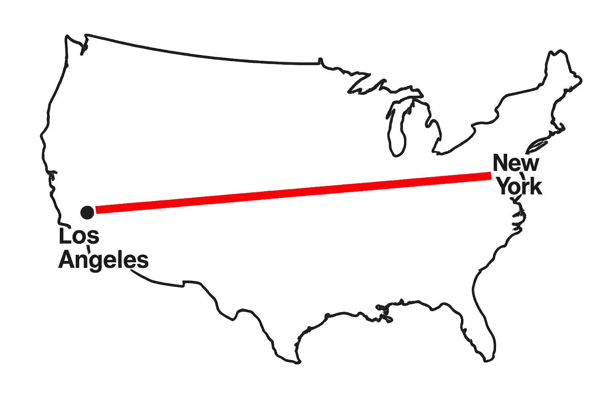

+125%
Scale & Growth in the U.S.
An estimated 6.3 million people are in situations of forced commercial sexual exploitation at any point in time.
– ILO
This could have occurred while traveling, as a location of exploitation, or during their escape and rehabilitation.

If every victim stood shoulder to shoulder, the line would stretch 2,400 miles.
That is equivalent to the distance from Los Angeles to New York.

1,416 persons were arrested for sex trafficking of a minor in the United States from 2010 to 2015
– McCain
That is about one arrest every day for four years.
Human trafficking is the second most profitable illegal industry in the U.S, and generates $236 billion in illegal profits annually worldwide
– ourrescue
If you stacked $236 billion in $100 bills, the pile would reach over 160 miles high — more than 27 Mount Everests.
The Role of Technology
The National Center for Missing and Exploited Children in the US reported an 846% increase from 2010 to 2015 in reports of suspected child sex trafficking – an increase the organization has found to be ‘directly correlated to the increased use of the Internet to sell children for sex.’
– ICAT
In 2020, over 80% of the U.S. Department of Justice’s sex trafficking prosecutions involved online advertising.
– United Nations
The Impact of Social Media and AI on CSAM
During the COVID-19 lockdown, the U.S. National Human Trafficking Hotline reported a 125% increase in reports of recruitment on Facebook and 95% increase in reports of recruitment on Instagram over the previous year.
– Polaris
Facebook
Instagram
f
⌾
+95%
In 2023 over the course of several months, the New Mexico Attorney General's Office carried out an undercover investigation of Meta's platforms, creating decoy accounts of children.
– New Mexico’s lawsuit against Meta
They found that “Meta steered and connected users – including children – to sexually explicit, exploitative and child sex abuse materials and facilitated human trafficking within or affecting New Mexico”.
In February 2024, 14-year old Sewell Setzer III committed suicide following months of communication with an AI-chat bot at its encouragement of Setzer to 'Please come home to me as soon as possible, my love.' Setzer's mother is now suing Character.AI, marking the first case taken to a U.S. federal court in which an AI firm is accused of causing the death of one of its users. The trial is set for November 2026.
– The New York Times
Character.AI is a chatbot platform where users create and chat with AI characters they customize to have unique personalities of their choosing, i.e. a therapist, friend, movie character, etc.
U.S. Response
How the United States government is responding to the sex trafficking crisis.
Legislative Response
See what laws are being passed to combat the issue
Justice System
How courts, judges, etc. are handling the crisis, public criticism of this response
Complications
Show large variety of laws in practice, find examples in data team's research
Indiana Case Study
In a study of just 100 child sex trafficking cases in Indiana that made it into the state justice system, over 60 unique state laws are referenced in the prosecution of traffickers, demonstrating the immense variety of legislation that exists for child sex trafficking cases at the state level alone.
The People Affected
Who Are The Victims?
Victim Profile
Nearly All Victims Are Girls — Average Age 15
In a review of 1,416 federal sex trafficking cases, 941 victims were identified. Nearly all (98.9%) were female, with an average age of just 15 years old at the time of exploitation.
98.9%
Female
15
Average age
Known and Trusted
45% knew their trafficker
More than half of identified minor victims were runaways. This isn't stranger danger, it's betrayal by someone familiar: a friend, romantic partner, or family member.
50%+
Runaways
45%
Knew Trafficker
Each dot represents 1% of identified minor victims.
Victims Become Criminals
A System That Criminalizes Survivors
62% of identified trafficking survivors reported being arrested or detained. Among those who were arrested, 71% now carry a criminal record, and 90% said the crimes were committed under coercion while they were trafficked. Instead of being treated as victims, many are pulled deeper into the criminal legal system.
100%
Identified survivors
People recognized as trafficking survivors.
62%
Arrested or detained
Nearly 2 out of 3 survivors are pulled into the criminal legal system.
71%
Carry a criminal record
Of those arrested, most leave with a record (≈44% of all survivors).
90%
Crimes under coercion
The vast majority say the crimes were committed under coercion while being trafficked (≈40% of all survivors).
The People Involved
Who Are The Traffickers?
Demographics
Child Sexual Exploitation Offender Profile
On average, convicted traffickers are overwhelmingly male, in their late 30s, and U.S. citizens — a largely domestic offender population operating in American communities.
94%
Male offenders
38
Average age
96%
U.S. citizens
These criminals are not operating far away. They are largely domestic offenders within American communities.
Prosecution Patterns
Trafficking Defendants Are Overwhelmingly Male
Of the 1,070 defendants charged with any of the three types of human trafficking offenses in U.S. district court in fiscal year 2022, 91% were male. Among the 203 defendants charged with peonage, slavery, forced labor, and sex trafficking, 69% were male. Of the 523 defendants charged with sexual exploitation and other abuse of children, 94% were male.
All Trafficking Defendants (2022)
9% Female • 91% Male
Child Sexual Exploitation (2022)
6% Female • 94% Male
Criminal History
68.5% had little or no prior history
These are often first-time offenders: neighbors, coworkers, family members, not career criminals with long rap sheets.
Most trafficking offenders are not long-time criminals – they are people with minimal records drawn into these crimes.
STAT7
identified victims across 11,999 cases reported to the National Human Trafficking Hotline
STAT8
The Connection to the Hospitality Industry
75% of human trafficking survivors reported encountering hotels at some point during their exploitation
– Human Trafficking Search
This could have occurred while traveling, as a location of exploitation, or during their escape and rehabilitation.
Warning Signs
Constant guest turnover, low security, and cash payments allow for anonymity. - The Exodus Road
Vulnerable groups staying in hotels (migrants, people facing poverty, families in crisis) are easy targets. - The Exodus Road
How to Tell
Heavy foot traffic in and out of a hotel room, requesting of rooms with a view of the parking lot, paying for rooms with cash or a pre-paid card, frequent requests for fresh towels and linens, extended stay with no/few personal possessions - NewGen Advisory
Perception vs. Reality
What people think trafficking looks like versus what it actually looks like.
"Human rights are not a privilege conferred by government. They are every human being’s entitlement by virtue of his humanity."
— Mother Teresa
“Remember that every person on the streets, in a club, on the internet, in a hotel room, WHEREVER they may be, have families and loved ones and hearts just as you do, and that they are worthy and enough. When you see us, could you just offer a small smile? Extend a small bit of compassion even though you may not personally understand? Small, simple actions have the potential to make a large impact, and now is the time more than ever before.”
— Melissa Diehl, survivor of human trafficking
“Human trafficking is an open wound on the body of contemporary society, a scourge upon the body of Christ. It is a crime against humanity.”
— Pope Francis